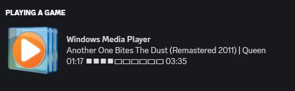

Windows Media Player Discord Rich Presence
2021
Discord activity status for the song currently playing on Windows Media Player
C#
This Windows application creates a Discord rich presence for Windows Media Player.

The application checks if Windows Media Player is open, and if it is fetches information about the current song using WindowsMediaPlayerController.